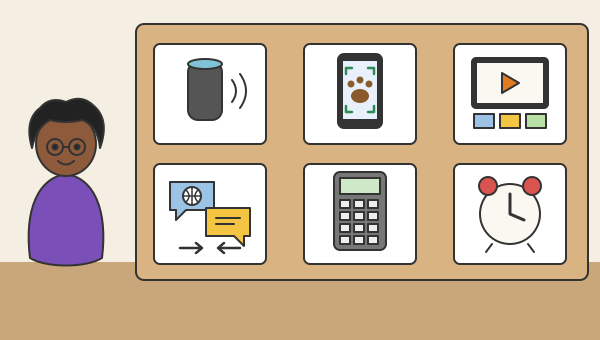

Media overview
All images, audio files and videos of this app with their source and licence.
Images

images/wandzeitung.svg© CC-BY-4.0Used on: AI in everyday life

images/beutel-szene.svg© CC-BY-4.0
All images, audio files and videos of this app with their source and licence.

images/wandzeitung.svg© CC-BY-4.0
Used on: AI in everyday life
images/beutel-szene.svg© CC-BY-4.0